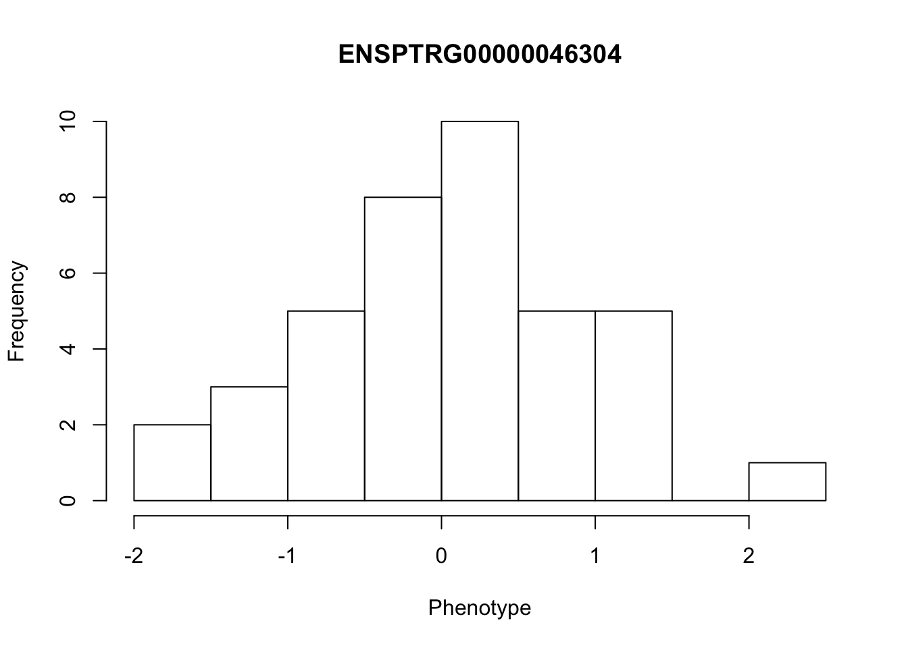
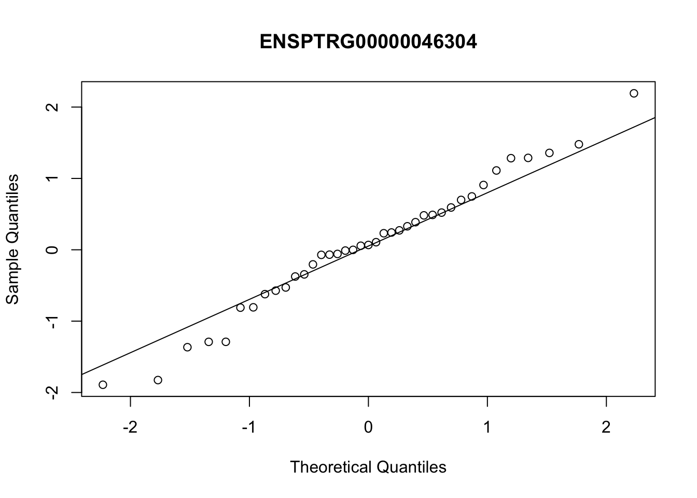
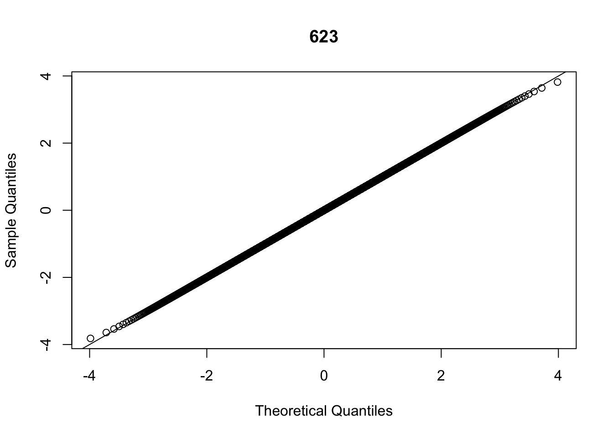
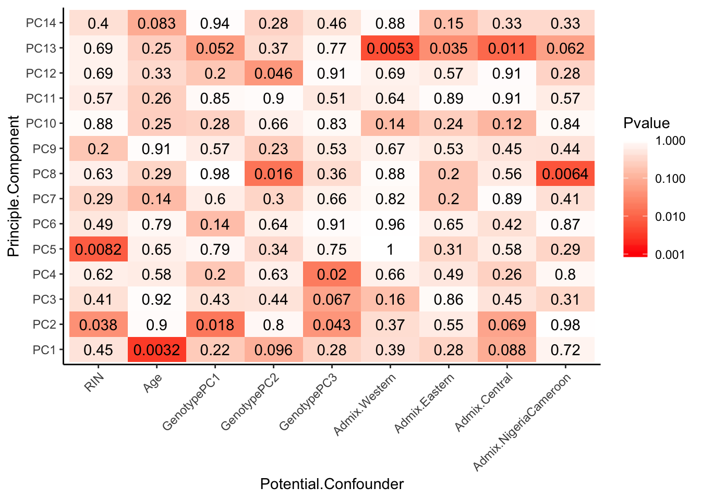

04272019_CheckRNASeqPCs_2
Ben Fair
4/27/2019
Last updated: 2019-06-11
Checks: 5 1
Knit directory: Comparative_eQTL/analysis/
This reproducible R Markdown analysis was created with workflowr (version 1.3.0). The Checks tab describes the reproducibility checks that were applied when the results were created. The Past versions tab lists the development history.
The R Markdown file has unstaged changes. To know which version of the R Markdown file created these results, you’ll want to first commit it to the Git repo. If you’re still working on the analysis, you can ignore this warning. When you’re finished, you can run wflow_publish to commit the R Markdown file and build the HTML.
Great job! The global environment was empty. Objects defined in the global environment can affect the analysis in your R Markdown file in unknown ways. For reproduciblity it’s best to always run the code in an empty environment.
The command set.seed(20190319) was run prior to running the code in the R Markdown file. Setting a seed ensures that any results that rely on randomness, e.g. subsampling or permutations, are reproducible.
Great job! Recording the operating system, R version, and package versions is critical for reproducibility.
Nice! There were no cached chunks for this analysis, so you can be confident that you successfully produced the results during this run.
Great! You are using Git for version control. Tracking code development and connecting the code version to the results is critical for reproducibility. The version displayed above was the version of the Git repository at the time these results were generated.
Note that you need to be careful to ensure that all relevant files for the analysis have been committed to Git prior to generating the results (you can use wflow_publish or wflow_git_commit). workflowr only checks the R Markdown file, but you know if there are other scripts or data files that it depends on. Below is the status of the Git repository when the results were generated:
Ignored files:
Ignored: .DS_Store
Ignored: .Rhistory
Ignored: .Rproj.user/
Ignored: analysis/.DS_Store
Ignored: analysis/20190521_eQTL_CrossSpeciesEnrichment_cache/
Ignored: analysis_temp/.DS_Store
Ignored: code/.DS_Store
Ignored: code/snakemake_workflow/.DS_Store
Ignored: data/.DS_Store
Ignored: data/PastAnalysesDataToKeep/.DS_Store
Ignored: docs/.DS_Store
Ignored: docs/assets/.DS_Store
Untracked files:
Untracked: analysis/20190502_Check_GemmaKinshipMatrix.Rmd
Untracked: analysis/20190502_Check_eQTLs.Rmd
Untracked: analysis/20190521_eQTL_CrossSpeciesEnrichment.Rmd
Untracked: analysis/20190606_eGene_Conservation.Rmd
Untracked: analysis_temp/20190412_Check_eQTLs.Rmd
Untracked: analysis_temp/PlayingWithGOAnalysis.R
Untracked: data/PastAnalysesDataToKeep/20190428_log10TPM.txt.gz
Untracked: docs/figure/20190521_eQTL_CrossSpeciesEnrichment.Rmd/
Untracked: docs/figure/20190606_eGene_Conservation.Rmd/
Unstaged changes:
Deleted: analysis/20190412_Check_eQTLs.Rmd
Modified: analysis/20190426_CheckRNASeqPCs_2.Rmd
Modified: analysis/20190428_Check_eQTLs.Rmd
Modified: analysis/index.Rmd
Note that any generated files, e.g. HTML, png, CSS, etc., are not included in this status report because it is ok for generated content to have uncommitted changes.
These are the previous versions of the R Markdown and HTML files. If you’ve configured a remote Git repository (see ?wflow_git_remote), click on the hyperlinks in the table below to view them.
| File | Version | Author | Date | Message |
|---|---|---|---|---|
| html | 8ab5bbf | Benjmain Fair | 2019-05-02 | update site |
| Rmd | ece3b4a | Benjmain Fair | 2019-04-30 | added STAR v kallisto comparison |
| Rmd | db7c847 | Benjmain Fair | 2019-04-27 | Added PCA of normalized data, new covariates R script |
library(corrplot)
library(ggfortify)
library(readxl)
library(tidyverse)
library(psych)
library(ggrepel)
library(knitr)
library(reshape2)
library(gplots)I previously did a similar analysis.. But this time I am using different data: Here the N genes by M individulals expression matrix has been summed to gene-level log(TPM) (as opposed to transcript level quantifications), filtered, standardized across individuals, quantile normalized across genes, and is exactly the phenotypes I will use for association testing.
# Read in count table (not raw counts but transformed as described above)
CountTable <- read.table(gzfile('../data/PastAnalysesDataToKeep/20190428_log10TPM.StandardizedAndNormalized.txt.gz'), header=T, check.names=FALSE, row.names = 1)
kable(CountTable[1:10,1:10])| 4X0095 | 4X0212 | 4X0267 | 4X0333 | 4X0339 | 4X0354 | 4X0357 | 4X0550 | 4x0025 | 4x0043 | |
|---|---|---|---|---|---|---|---|---|---|---|
| ENSPTRG00000000001 | 0.8416212 | -0.7904331 | 1.5144345 | 0.5872556 | -0.2028427 | -0.5092311 | 0.5824408 | -0.5291596 | 0.3792723 | -0.1078288 |
| ENSPTRG00000000008 | 0.7757291 | 0.5565898 | 0.6001624 | -2.2634369 | 1.3151323 | 1.7291771 | 0.8583642 | -1.4100801 | -1.0562368 | -1.5091332 |
| ENSPTRG00000000009 | -1.3483746 | -0.3429953 | -0.5080765 | 1.1377030 | 1.0684250 | 1.3367160 | 0.4142126 | -1.1517021 | -0.6595468 | 1.4661884 |
| ENSPTRG00000000021 | -0.7569059 | -0.4845533 | -0.1795951 | -1.3572402 | 0.6238155 | -0.4889312 | 0.8329788 | -1.2756167 | 0.5377367 | 0.7925146 |
| ENSPTRG00000000024 | 0.8308280 | -1.6069711 | 1.1635983 | 2.0259921 | 1.9458773 | 0.8910849 | 1.4642099 | -0.4564110 | 0.3076960 | -1.2210758 |
| ENSPTRG00000000025 | 0.7997104 | -1.1851636 | 1.0160362 | 1.1025578 | 0.7643574 | -0.9831549 | -1.0559415 | -0.1501142 | 0.4671330 | -1.5410475 |
| ENSPTRG00000000027 | 0.0181772 | 1.4756654 | 1.1422363 | -1.0294431 | 1.0639476 | 0.3301120 | 0.6700917 | -0.1518244 | -0.5623238 | 0.5159799 |
| ENSPTRG00000000028 | 0.1034081 | -1.3947115 | 0.7078222 | 1.4817199 | 1.7375314 | 2.1964366 | 1.6976258 | -1.1134913 | -0.9211644 | -1.0317436 |
| ENSPTRG00000000029 | 0.4249217 | -0.4301090 | 0.1528507 | -0.1381548 | 0.4234417 | 0.4874074 | 0.4114508 | 0.0234199 | 0.5856492 | 0.8435503 |
| ENSPTRG00000000031 | 0.8123452 | -1.3223937 | -1.9747476 | 1.6411045 | 2.2196605 | 1.7062608 | 1.6008516 | -0.5832423 | -0.3320767 | 0.9622599 |
# Read admixture coefficients (K=4), and first 3 principle components, since some form of population substructure will likely be included in the expression modeling as a covariate.
AdmixtureCoeff <- read.table("../output/PopulationStructure/Admixture/MergedForAdmixture.4.Q.labelled") %>%
dplyr::rename(Individual.ID=V2) %>%
select(-V1, -V3, -V4, -V5, -V6) %>%
dplyr::rename(Admix.Western=V9, Admix.Eastern=V10, Admix.Central=V8, Admix.NigeriaCameroon=V7) #Renaming the admixture clusters after looking at plots with known subspecies
kable(head(AdmixtureCoeff))| Individual.ID | Admix.NigeriaCameroon | Admix.Central | Admix.Western | Admix.Eastern |
|---|---|---|---|---|
| 549 | 1.0e-05 | 0.000010 | 0.999970 | 1e-05 |
| 570 | 1.3e-05 | 0.059266 | 0.940711 | 1e-05 |
| 389 | 1.0e-05 | 0.000010 | 0.999970 | 1e-05 |
| 456 | 1.1e-05 | 0.000010 | 0.999969 | 1e-05 |
| 623 | 1.0e-05 | 0.000010 | 0.999970 | 1e-05 |
| 438 | 1.0e-05 | 0.000010 | 0.999970 | 1e-05 |
GenotypePCs <- read.table("../output/PopulationStructure/pca.eigenvec", header=T) %>%
select(IID, PC1, PC2, PC3) %>%
dplyr::rename(Individual.ID=IID, GenotypePC1=PC1, GenotypePC2=PC2, GenotypePC3=PC3)
kable(head(GenotypePCs))| Individual.ID | GenotypePC1 | GenotypePC2 | GenotypePC3 |
|---|---|---|---|
| 549 | -0.1085980 | -0.0184943 | 0.0047314 |
| 570 | -0.0945827 | -0.0228220 | -0.0140236 |
| 389 | -0.1101630 | -0.0206061 | 0.0032451 |
| 456 | -0.1080570 | -0.0178108 | 0.0044597 |
| 623 | -0.1098320 | -0.0206678 | 0.0041903 |
| 438 | -0.1081420 | -0.0177823 | 0.0045724 |
# Read in other metadata
OtherMetadata <- as.data.frame(read_excel("../data/Metadata.xlsx"))New names:
* `` -> ...19kable(head(OtherMetadata))| Individual.ID | Source | Individual.Name | Yerkes.ID | Label | Notes | FileID.(Library_Species_CellType_FlowCell) | SX | RNA.Library.prep.batch | RNA.Sequencing.Lane | Sequencing.Barcode | RNA.Extract_date | DNASeq_FastqIdentifier | DNA.library.prep.batch | DNA.Sequencing.Lane | DNA.Sequencin.Barcode | DNA.Extract_date | Age | …19 | Post.mortem.time.interval | RIN | Viral.status | RNA.total.reads.mapped.to.genome | RNA.total.reads.mapping.to.ortho.exons | Subspecies | DOB | DOD | DOB Estimated | Age (DOD-DOB) | OldLibInfo. RIN,RNA-extractdate,RNAbatch |
|---|---|---|---|---|---|---|---|---|---|---|---|---|---|---|---|---|---|---|---|---|---|---|---|---|---|---|---|---|---|
| 295 | Yerkes | Duncan | 295 | 295 | NA | 24_CM_3_L006.bam | M | 5 | 6 | 18 | 2018-10-10 | YG3 | 1 | 1 | NA | 2018-09-01 | 40 | NA | 0.5 | 7.3 | NA | 45.67002 | 17.51562 | verus/ellioti | 24731 | 39386 | NA | 40 | 6.3,6/14/2016,2 |
| 317 | Yerkes | Iyk | 317 | 317 | NA | 11_CM_3_L004.bam | M | 3 | 4 | 4 | 2016-06-07 | YG2 | 1 | 1 | NA | 2018-09-01 | 44 | NA | 2.5 | 7.6 | NA | 42.75617 | 17.18811 | verus | 22859 | 38832 | NA | 43 | NA |
| 338 | Yerkes | Maxine | 338 | 338 | NA | 8_CF_3_L008.bam | F | 3 | 8 | 6 | 2016-06-07 | YG1 | 1 | 1 | NA | 2018-09-01 | 53 | NA | NA | 7.2 | NA | 50.52632 | 19.49295 | verus | 20821 | 40179 | Yes | 53 | NA |
| 389 | Yerkes | Rogger | 389 | 389 | NA | NA | M | 4 | NA | 23 | 2018-10-10 | YG39 | 2 | 2 | NA | 2018-10-01 | 45 | NA | NA | 5.7 | NA | NA | NA | verus | 25204 | 41656 | NA | 45 | NA |
| 438 | Yerkes | Cheeta | 438 | 438 | NA | 155_CF_3_L004.bam | F | 2 | 4 | 8 | 2016-06-22 | YG22 | 1 | 1 | NA | 2018-09-01 | 55 | NA | NA | 5.6 | NA | 55.30614 | 18.06375 | verus | 20821 | 40909 | Yes | 55 | NA |
| 456 | Yerkes | Mai | 456 | 456 | NA | 156_CF_3_L001.bam | F | 2 | 1 | 15 | 2016-06-22 | YG23 | 1 | 1 | NA | 2018-09-01 | 49 | NA | NA | 5.5 | NA | 54.00665 | 20.13760 | verus | 23377 | 41275 | Yes | 49 | NA |
#Merge all metadata tables
Metadata <- OtherMetadata %>%
left_join(GenotypePCs, by=c("Individual.ID")) %>%
left_join(AdmixtureCoeff, by=c("Individual.ID"))
kable(head(Metadata))| Individual.ID | Source | Individual.Name | Yerkes.ID | Label | Notes | FileID.(Library_Species_CellType_FlowCell) | SX | RNA.Library.prep.batch | RNA.Sequencing.Lane | Sequencing.Barcode | RNA.Extract_date | DNASeq_FastqIdentifier | DNA.library.prep.batch | DNA.Sequencing.Lane | DNA.Sequencin.Barcode | DNA.Extract_date | Age | …19 | Post.mortem.time.interval | RIN | Viral.status | RNA.total.reads.mapped.to.genome | RNA.total.reads.mapping.to.ortho.exons | Subspecies | DOB | DOD | DOB Estimated | Age (DOD-DOB) | OldLibInfo. RIN,RNA-extractdate,RNAbatch | GenotypePC1 | GenotypePC2 | GenotypePC3 | Admix.NigeriaCameroon | Admix.Central | Admix.Western | Admix.Eastern |
|---|---|---|---|---|---|---|---|---|---|---|---|---|---|---|---|---|---|---|---|---|---|---|---|---|---|---|---|---|---|---|---|---|---|---|---|---|
| 295 | Yerkes | Duncan | 295 | 295 | NA | 24_CM_3_L006.bam | M | 5 | 6 | 18 | 2018-10-10 | YG3 | 1 | 1 | NA | 2018-09-01 | 40 | NA | 0.5 | 7.3 | NA | 45.67002 | 17.51562 | verus/ellioti | 24731 | 39386 | NA | 40 | 6.3,6/14/2016,2 | -0.0819553 | 0.0484042 | 0.0151794 | 0.184097 | 1e-05 | 0.815883 | 1e-05 |
| 317 | Yerkes | Iyk | 317 | 317 | NA | 11_CM_3_L004.bam | M | 3 | 4 | 4 | 2016-06-07 | YG2 | 1 | 1 | NA | 2018-09-01 | 44 | NA | 2.5 | 7.6 | NA | 42.75617 | 17.18811 | verus | 22859 | 38832 | NA | 43 | NA | -0.1089490 | -0.0190248 | 0.0051753 | 0.000011 | 1e-05 | 0.999969 | 1e-05 |
| 338 | Yerkes | Maxine | 338 | 338 | NA | 8_CF_3_L008.bam | F | 3 | 8 | 6 | 2016-06-07 | YG1 | 1 | 1 | NA | 2018-09-01 | 53 | NA | NA | 7.2 | NA | 50.52632 | 19.49295 | verus | 20821 | 40179 | Yes | 53 | NA | -0.1081500 | -0.0179254 | 0.0048894 | 0.000010 | 1e-05 | 0.999970 | 1e-05 |
| 389 | Yerkes | Rogger | 389 | 389 | NA | NA | M | 4 | NA | 23 | 2018-10-10 | YG39 | 2 | 2 | NA | 2018-10-01 | 45 | NA | NA | 5.7 | NA | NA | NA | verus | 25204 | 41656 | NA | 45 | NA | -0.1101630 | -0.0206061 | 0.0032451 | 0.000010 | 1e-05 | 0.999970 | 1e-05 |
| 438 | Yerkes | Cheeta | 438 | 438 | NA | 155_CF_3_L004.bam | F | 2 | 4 | 8 | 2016-06-22 | YG22 | 1 | 1 | NA | 2018-09-01 | 55 | NA | NA | 5.6 | NA | 55.30614 | 18.06375 | verus | 20821 | 40909 | Yes | 55 | NA | -0.1081420 | -0.0177823 | 0.0045724 | 0.000010 | 1e-05 | 0.999970 | 1e-05 |
| 456 | Yerkes | Mai | 456 | 456 | NA | 156_CF_3_L001.bam | F | 2 | 1 | 15 | 2016-06-22 | YG23 | 1 | 1 | NA | 2018-09-01 | 49 | NA | NA | 5.5 | NA | 54.00665 | 20.13760 | verus | 23377 | 41275 | Yes | 49 | NA | -0.1080570 | -0.0178108 | 0.0044597 | 0.000011 | 1e-05 | 0.999969 | 1e-05 |
First, look at distribution of a couple genes across samples. Plot histogram and normal QQ-plot
set.seed(0)
# Pick some random row numbers to plot.
for (i in sample(1:nrow(CountTable), 5, replace=F)){
Phenotype <- as.numeric(CountTable[i,])
hist(Phenotype, main=rownames(CountTable)[i])
qqnorm(Phenotype, main=rownames(CountTable)[i])
qqline(Phenotype)
}
| Version | Author | Date |
|---|---|---|
| 8ab5bbf | Benjmain Fair | 2019-05-02 |

| Version | Author | Date |
|---|---|---|
| 8ab5bbf | Benjmain Fair | 2019-05-02 |
| Version | Author | Date |
|---|---|---|
| 8ab5bbf | Benjmain Fair | 2019-05-02 |
| Version | Author | Date |
|---|---|---|
| 8ab5bbf | Benjmain Fair | 2019-05-02 |
| Version | Author | Date |
|---|---|---|
| 8ab5bbf | Benjmain Fair | 2019-05-02 |
| Version | Author | Date |
|---|---|---|
| 8ab5bbf | Benjmain Fair | 2019-05-02 |
| Version | Author | Date |
|---|---|---|
| 8ab5bbf | Benjmain Fair | 2019-05-02 |
| Version | Author | Date |
|---|---|---|
| 8ab5bbf | Benjmain Fair | 2019-05-02 |

| Version | Author | Date |
|---|---|---|
| 8ab5bbf | Benjmain Fair | 2019-05-02 |
| Version | Author | Date |
|---|---|---|
| 8ab5bbf | Benjmain Fair | 2019-05-02 |
# Pick a some randome column numbers to plot. these distributions (of all expressed genes in an individual) should be normal since they are quantile normalized.
for (i in sample(1:ncol(CountTable), 3, replace=F)){
Phenotype <- as.numeric(CountTable[,i])
hist(Phenotype, main=colnames(CountTable)[i])
qqnorm(Phenotype, main=colnames(CountTable)[i])
qqline(Phenotype)
}
| Version | Author | Date |
|---|---|---|
| 8ab5bbf | Benjmain Fair | 2019-05-02 |
| Version | Author | Date |
|---|---|---|
| 8ab5bbf | Benjmain Fair | 2019-05-02 |
| Version | Author | Date |
|---|---|---|
| 8ab5bbf | Benjmain Fair | 2019-05-02 |

| Version | Author | Date |
|---|---|---|
| 8ab5bbf | Benjmain Fair | 2019-05-02 |
| Version | Author | Date |
|---|---|---|
| 8ab5bbf | Benjmain Fair | 2019-05-02 |
| Version | Author | Date |
|---|---|---|
| 8ab5bbf | Benjmain Fair | 2019-05-02 |
Plot correlation matrix before standardization and qqnorm.
CountTableNoNorm <- read.table(gzfile('../data/PastAnalysesDataToKeep/20190428_log10TPM.txt.gz'), header=T, check.names=FALSE, row.names = 1)
CorMatrix <- CountTableNoNorm %>%
cor(method = c("spearman"))
RNAExtractionDate <- as.character(unclass(factor(plyr::mapvalues(row.names(CorMatrix), from=Metadata$Individual.ID, to=Metadata$RNA.Extract_date))))
RNA.Library.prep.batch <- as.character(unclass(factor(plyr::mapvalues(row.names(CorMatrix), from=Metadata$Individual.ID, to=Metadata$RNA.Library.prep.batch))))
# Heatmap of correlation. Row colors for RNA extraction batch, column colors for RNA library prep batch
heatmap.2(CorMatrix, trace="none", ColSideColors=RNAExtractionDate, RowSideColors = RNA.Library.prep.batch)
| Version | Author | Date |
|---|---|---|
| 8ab5bbf | Benjmain Fair | 2019-05-02 |
qplot(CountTableNoNorm$`4X0267`, CountTableNoNorm$`4X0212`)
| Version | Author | Date |
|---|---|---|
| 8ab5bbf | Benjmain Fair | 2019-05-02 |
qplot(CountTableNoNorm$Little_R, CountTableNoNorm$`4X0212`)
| Version | Author | Date |
|---|---|---|
| 8ab5bbf | Benjmain Fair | 2019-05-02 |
# What is mean correlation
mean(CorMatrix)[1] 0.9346274Plot correlation matrix after standardization and qqnorm.
CorMatrix <- CountTable %>%
cor(method = c("spearman"))
RNAExtractionDate <- as.character(unclass(factor(plyr::mapvalues(row.names(CorMatrix), from=Metadata$Individual.ID, to=Metadata$RNA.Extract_date))))
RNA.Library.prep.batch <- as.character(unclass(factor(plyr::mapvalues(row.names(CorMatrix), from=Metadata$Individual.ID, to=Metadata$RNA.Library.prep.batch))))
# Heatmap of correlation. Row colors for RNA extraction batch, column colors for RNA library prep batch
heatmap.2(CorMatrix, trace="none", ColSideColors=RNAExtractionDate, RowSideColors = RNA.Library.prep.batch)
| Version | Author | Date |
|---|---|---|
| 8ab5bbf | Benjmain Fair | 2019-05-02 |
# What is mean correlation
mean(CorMatrix)[1] 0.0131308This correlation matrix looks reassuringly similar to the previous analysis which had a number of pre-processing differences. Still a within-batch clustering of the same samples in the bottom left.
Now perform PCA, plot a few visualizations…
# pca with log-transformed count table (+ 0.1 pseudocount)
pca_results <- CountTable %>%
t() %>%
prcomp(center=T, scale. = T)
summary(pca_results)Importance of components:
PC1 PC2 PC3 PC4 PC5
Standard deviation 55.6245 37.69842 32.66306 29.43659 27.67100
Proportion of Variance 0.2087 0.09587 0.07197 0.05845 0.05165
Cumulative Proportion 0.2087 0.30459 0.37656 0.43501 0.48667
PC6 PC7 PC8 PC9 PC10
Standard deviation 25.26349 24.38488 23.86068 21.49625 19.98403
Proportion of Variance 0.04305 0.04011 0.03841 0.03117 0.02694
Cumulative Proportion 0.52972 0.56983 0.60824 0.63941 0.66635
PC11 PC12 PC13 PC14 PC15 PC16
Standard deviation 19.2508 17.75043 17.52576 16.5156 15.85069 15.60038
Proportion of Variance 0.0250 0.02125 0.02072 0.0184 0.01695 0.01642
Cumulative Proportion 0.6914 0.71260 0.73332 0.7517 0.76867 0.78509
PC17 PC18 PC19 PC20 PC21
Standard deviation 14.97137 14.78349 14.38254 13.68883 13.40536
Proportion of Variance 0.01512 0.01474 0.01395 0.01264 0.01212
Cumulative Proportion 0.80021 0.81495 0.82891 0.84155 0.85367
PC22 PC23 PC24 PC25 PC26
Standard deviation 13.25781 13.02614 12.8281 12.61317 12.30077
Proportion of Variance 0.01186 0.01145 0.0111 0.01073 0.01021
Cumulative Proportion 0.86553 0.87697 0.8881 0.89881 0.90901
PC27 PC28 PC29 PC30 PC31 PC32
Standard deviation 11.66758 11.43071 11.27978 11.1598 11.0282 10.77957
Proportion of Variance 0.00918 0.00881 0.00858 0.0084 0.0082 0.00784
Cumulative Proportion 0.91820 0.92701 0.93559 0.9440 0.9522 0.96004
PC33 PC34 PC35 PC36 PC37 PC38
Standard deviation 10.49005 10.33856 10.1852 9.95047 9.51603 9.06382
Proportion of Variance 0.00742 0.00721 0.0070 0.00668 0.00611 0.00554
Cumulative Proportion 0.96746 0.97467 0.9817 0.98835 0.99446 1.00000
PC39
Standard deviation 6.397e-14
Proportion of Variance 0.000e+00
Cumulative Proportion 1.000e+00screeplot(pca_results, main="scree plot of PCA")
| Version | Author | Date |
|---|---|---|
| 8ab5bbf | Benjmain Fair | 2019-05-02 |
# Merge with metadata
Merged <- merge(pca_results$x, Metadata, by.x = "row.names", by.y = "Individual.ID", all=TRUE)
kable(head(Merged))| Row.names | PC1 | PC2 | PC3 | PC4 | PC5 | PC6 | PC7 | PC8 | PC9 | PC10 | PC11 | PC12 | PC13 | PC14 | PC15 | PC16 | PC17 | PC18 | PC19 | PC20 | PC21 | PC22 | PC23 | PC24 | PC25 | PC26 | PC27 | PC28 | PC29 | PC30 | PC31 | PC32 | PC33 | PC34 | PC35 | PC36 | PC37 | PC38 | PC39 | Source | Individual.Name | Yerkes.ID | Label | Notes | FileID.(Library_Species_CellType_FlowCell) | SX | RNA.Library.prep.batch | RNA.Sequencing.Lane | Sequencing.Barcode | RNA.Extract_date | DNASeq_FastqIdentifier | DNA.library.prep.batch | DNA.Sequencing.Lane | DNA.Sequencin.Barcode | DNA.Extract_date | Age | …19 | Post.mortem.time.interval | RIN | Viral.status | RNA.total.reads.mapped.to.genome | RNA.total.reads.mapping.to.ortho.exons | Subspecies | DOB | DOD | DOB Estimated | Age (DOD-DOB) | OldLibInfo. RIN,RNA-extractdate,RNAbatch | GenotypePC1 | GenotypePC2 | GenotypePC3 | Admix.NigeriaCameroon | Admix.Central | Admix.Western | Admix.Eastern |
|---|---|---|---|---|---|---|---|---|---|---|---|---|---|---|---|---|---|---|---|---|---|---|---|---|---|---|---|---|---|---|---|---|---|---|---|---|---|---|---|---|---|---|---|---|---|---|---|---|---|---|---|---|---|---|---|---|---|---|---|---|---|---|---|---|---|---|---|---|---|---|---|---|---|---|---|
| 295 | -44.25396 | 39.46117 | 17.359257 | 0.2046911 | -47.536198 | 33.86663 | 20.219863 | -6.086724 | 26.7928698 | -11.498029 | 9.405888 | -4.187123 | -12.145145 | -6.252464 | -2.0213575 | -11.599748 | -14.352268 | -3.135726 | 22.4873184 | -14.8178317 | 9.405017 | 14.176096 | 6.0304810 | -13.561258 | 5.4039399 | 13.4904886 | 17.272210 | -11.298755 | 17.8043461 | -7.452475 | 11.580727 | 9.743226 | 6.855401 | 12.517849 | -25.424186 | -0.9077519 | -7.5764276 | 5.8458830 | 0 | Yerkes | Duncan | 295 | 295 | NA | 24_CM_3_L006.bam | M | 5 | 6 | 18 | 2018-10-10 | YG3 | 1 | 1 | NA | 2018-09-01 | 40 | NA | 0.5 | 7.3 | NA | 45.67002 | 17.51562 | verus/ellioti | 24731 | 39386 | NA | 40 | 6.3,6/14/2016,2 | -0.0819553 | 0.0484042 | 0.0151794 | 0.184097 | 1e-05 | 0.815883 | 1e-05 |
| 317 | -26.89597 | -28.73500 | 13.860490 | 42.2073257 | -69.264050 | -6.70541 | 9.734624 | 7.936016 | -0.6354965 | 11.864536 | -7.933379 | 24.696077 | 5.460629 | -3.740944 | -2.2856360 | -17.093822 | 2.475751 | 16.771805 | -0.6031362 | 16.6068327 | 3.485551 | 22.072873 | 5.2915842 | 10.430069 | -2.8691931 | 27.2579562 | 2.519391 | 2.724505 | -19.0987695 | 18.870823 | 2.701881 | -1.036678 | -12.423519 | -18.527419 | 3.105442 | 5.5070933 | -10.1533966 | -2.4582925 | 0 | Yerkes | Iyk | 317 | 317 | NA | 11_CM_3_L004.bam | M | 3 | 4 | 4 | 2016-06-07 | YG2 | 1 | 1 | NA | 2018-09-01 | 44 | NA | 2.5 | 7.6 | NA | 42.75617 | 17.18811 | verus | 22859 | 38832 | NA | 43 | NA | -0.1089490 | -0.0190248 | 0.0051753 | 0.000011 | 1e-05 | 0.999969 | 1e-05 |
| 338 | -29.77820 | -25.90570 | -17.158137 | -45.2377382 | 11.163235 | -31.38944 | -63.202548 | 9.528283 | -14.7587833 | 26.583439 | -13.804533 | 7.950232 | 12.935148 | 1.757393 | 19.7078123 | 7.968451 | -7.033978 | 16.893201 | 3.3684154 | -3.6439445 | 15.812871 | -2.094309 | 11.0748962 | 8.136154 | 0.9705953 | 10.6349247 | 8.182168 | -35.849824 | 16.7763344 | -5.653386 | -2.946741 | 3.082690 | -5.534944 | 1.310680 | 6.145383 | 10.4990161 | -2.2335835 | -0.4868652 | 0 | Yerkes | Maxine | 338 | 338 | NA | 8_CF_3_L008.bam | F | 3 | 8 | 6 | 2016-06-07 | YG1 | 1 | 1 | NA | 2018-09-01 | 53 | NA | NA | 7.2 | NA | 50.52632 | 19.49295 | verus | 20821 | 40179 | Yes | 53 | NA | -0.1081500 | -0.0179254 | 0.0048894 | 0.000010 | 1e-05 | 0.999970 | 1e-05 |
| 389 | -51.39185 | 30.16459 | 16.153499 | 3.5874022 | 16.873720 | 26.88904 | -21.859003 | 17.004977 | 7.1826759 | -30.828229 | -27.411625 | 31.722105 | -9.249130 | -9.854308 | 26.1733970 | 13.571025 | -14.070649 | -16.612163 | -9.4107028 | 22.2163771 | -5.953215 | -3.499962 | 0.6961453 | 32.852243 | -18.3509125 | -4.1584074 | 5.856220 | 10.802174 | 0.6790158 | 5.103287 | -3.765796 | -1.526496 | 11.410236 | 13.192573 | -4.075502 | 2.2978888 | -8.9920692 | 8.8159064 | 0 | Yerkes | Rogger | 389 | 389 | NA | NA | M | 4 | NA | 23 | 2018-10-10 | YG39 | 2 | 2 | NA | 2018-10-01 | 45 | NA | NA | 5.7 | NA | NA | NA | verus | 25204 | 41656 | NA | 45 | NA | -0.1101630 | -0.0206061 | 0.0032451 | 0.000010 | 1e-05 | 0.999970 | 1e-05 |
| 438 | -62.33852 | 36.92141 | 39.104542 | -19.3222516 | 2.345069 | -14.70660 | -22.140914 | -19.583242 | -5.4979372 | 1.585372 | -8.799630 | -29.366938 | 13.754492 | -1.453955 | 4.9970367 | -2.628545 | 21.676829 | 8.132961 | -18.7010009 | -0.7851945 | 8.684619 | 3.330513 | -2.1922982 | 2.562032 | -9.1400894 | 0.3411153 | 17.550933 | 19.434638 | -8.5296090 | -20.122647 | 17.236158 | -15.881218 | -27.288212 | 7.557714 | -6.862128 | -7.4860033 | 2.3166852 | 3.9779611 | 0 | Yerkes | Cheeta | 438 | 438 | NA | 155_CF_3_L004.bam | F | 2 | 4 | 8 | 2016-06-22 | YG22 | 1 | 1 | NA | 2018-09-01 | 55 | NA | NA | 5.6 | NA | 55.30614 | 18.06375 | verus | 20821 | 40909 | Yes | 55 | NA | -0.1081420 | -0.0177823 | 0.0045724 | 0.000010 | 1e-05 | 0.999970 | 1e-05 |
| 456 | -68.68134 | 2.34152 | 3.310246 | -30.2323017 | 7.652629 | -28.02238 | -3.335123 | -22.198197 | -33.6189279 | -23.040870 | 18.494698 | -20.952720 | 11.472863 | -6.511476 | -0.2133327 | -17.377888 | 14.057399 | -5.011164 | 3.5675026 | -20.0366185 | -15.274251 | 4.512365 | -3.2263743 | 8.089678 | 0.7228579 | 4.2801799 | 17.411825 | 9.877313 | 16.7347428 | 35.290192 | -9.587897 | -8.534385 | 14.786548 | -2.838145 | 2.797917 | 1.3409950 | -0.1892656 | -5.8230831 | 0 | Yerkes | Mai | 456 | 456 | NA | 156_CF_3_L001.bam | F | 2 | 1 | 15 | 2016-06-22 | YG23 | 1 | 1 | NA | 2018-09-01 | 49 | NA | NA | 5.5 | NA | 54.00665 | 20.13760 | verus | 23377 | 41275 | Yes | 49 | NA | -0.1080570 | -0.0178108 | 0.0044597 | 0.000011 | 1e-05 | 0.999969 | 1e-05 |
# Plot a couple PCs with a couple potential covariates
ggplot(Merged, aes(x=PC2, y=PC1, color=factor(RNA.Extract_date), label=Row.names)) +
geom_point() +
geom_text_repel(size=2.5)
| Version | Author | Date |
|---|---|---|
| 8ab5bbf | Benjmain Fair | 2019-05-02 |
ggplot(Merged, aes(x=PC1, y=PC2, color=factor(RNA.Library.prep.batch), label=Row.names)) +
geom_point() +
geom_text_repel(size=2.5)
| Version | Author | Date |
|---|---|---|
| 8ab5bbf | Benjmain Fair | 2019-05-02 |
ggplot(Merged, aes(x=PC2, y=PC1, color=Age, label=Row.names)) +
geom_point() +
geom_text_repel(size=2.5)
| Version | Author | Date |
|---|---|---|
| 8ab5bbf | Benjmain Fair | 2019-05-02 |
Can already see maybe something with the RNA extraction batch in first PC… Now I am going to look more systematically for significant correlations between potential observed confounders in the Metadata and the first 10 principle components. Will use Pearsons’s correlation to test continuous continuous confounders, will use anova for categorical confounders.
First the continuous confounders
# Grab first 10 PCs
PCs_to_test <- Merged[,2:15]
kable(head(PCs_to_test))| PC1 | PC2 | PC3 | PC4 | PC5 | PC6 | PC7 | PC8 | PC9 | PC10 | PC11 | PC12 | PC13 | PC14 |
|---|---|---|---|---|---|---|---|---|---|---|---|---|---|
| -44.25396 | 39.46117 | 17.359257 | 0.2046911 | -47.536198 | 33.86663 | 20.219863 | -6.086724 | 26.7928698 | -11.498029 | 9.405888 | -4.187123 | -12.145145 | -6.252464 |
| -26.89597 | -28.73500 | 13.860490 | 42.2073257 | -69.264050 | -6.70541 | 9.734624 | 7.936016 | -0.6354965 | 11.864536 | -7.933379 | 24.696077 | 5.460629 | -3.740944 |
| -29.77820 | -25.90570 | -17.158137 | -45.2377382 | 11.163235 | -31.38944 | -63.202548 | 9.528283 | -14.7587833 | 26.583439 | -13.804533 | 7.950232 | 12.935148 | 1.757393 |
| -51.39185 | 30.16459 | 16.153499 | 3.5874022 | 16.873720 | 26.88904 | -21.859003 | 17.004977 | 7.1826759 | -30.828229 | -27.411625 | 31.722105 | -9.249130 | -9.854308 |
| -62.33852 | 36.92141 | 39.104542 | -19.3222516 | 2.345069 | -14.70660 | -22.140914 | -19.583242 | -5.4979372 | 1.585372 | -8.799630 | -29.366938 | 13.754492 | -1.453955 |
| -68.68134 | 2.34152 | 3.310246 | -30.2323017 | 7.652629 | -28.02238 | -3.335123 | -22.198197 | -33.6189279 | -23.040870 | 18.494698 | -20.952720 | 11.472863 | -6.511476 |
# Grab potential continuous confounders that make sense to test
Continuous_confounders_to_test <- Merged[, c("RIN", "Age", "GenotypePC1", "GenotypePC2", "GenotypePC3", "Admix.Western", "Admix.Eastern", "Admix.Central", "Admix.NigeriaCameroon")]
kable(head(Continuous_confounders_to_test))| RIN | Age | GenotypePC1 | GenotypePC2 | GenotypePC3 | Admix.Western | Admix.Eastern | Admix.Central | Admix.NigeriaCameroon |
|---|---|---|---|---|---|---|---|---|
| 7.3 | 40 | -0.0819553 | 0.0484042 | 0.0151794 | 0.815883 | 1e-05 | 1e-05 | 0.184097 |
| 7.6 | 44 | -0.1089490 | -0.0190248 | 0.0051753 | 0.999969 | 1e-05 | 1e-05 | 0.000011 |
| 7.2 | 53 | -0.1081500 | -0.0179254 | 0.0048894 | 0.999970 | 1e-05 | 1e-05 | 0.000010 |
| 5.7 | 45 | -0.1101630 | -0.0206061 | 0.0032451 | 0.999970 | 1e-05 | 1e-05 | 0.000010 |
| 5.6 | 55 | -0.1081420 | -0.0177823 | 0.0045724 | 0.999970 | 1e-05 | 1e-05 | 0.000010 |
| 5.5 | 49 | -0.1080570 | -0.0178108 | 0.0044597 | 0.999969 | 1e-05 | 1e-05 | 0.000011 |
# Test
Spearman_test_results <- corr.test(Continuous_confounders_to_test, PCs_to_test, adjust="none", method="spearman")
MinP_floor <- floor(log10(min(Spearman_test_results$p)))
# Plot
Spearman_test_results$p %>%
melt() %>%
dplyr::rename(Pvalue = value, Principle.Component=Var2, Potential.Confounder=Var1) %>%
ggplot(aes(x=Potential.Confounder, y=Principle.Component, fill=Pvalue)) +
geom_tile() +
geom_text(aes(label = signif(Pvalue, 2))) +
scale_fill_gradient(limits=c(10**MinP_floor, 1), breaks=10**seq(MinP_floor,0,1), trans = 'log', high="white", low="red" ) +
theme_classic() +
theme(axis.text.x = element_text(angle = 45, hjust = 1))
| Version | Author | Date |
|---|---|---|
| 8ab5bbf | Benjmain Fair | 2019-05-02 |
And the categorical confounders…
# Grab potential categorical confounders that make sense to test
Categorical_confounders_to_test <- Merged[,c("Viral.status", "SX","RNA.Extract_date", "RNA.Library.prep.batch", "Source")]
kable(head(Categorical_confounders_to_test))| Viral.status | SX | RNA.Extract_date | RNA.Library.prep.batch | Source |
|---|---|---|---|---|
| NA | M | 2018-10-10 | 5 | Yerkes |
| NA | M | 2016-06-07 | 3 | Yerkes |
| NA | F | 2016-06-07 | 3 | Yerkes |
| NA | M | 2018-10-10 | 4 | Yerkes |
| NA | F | 2016-06-22 | 2 | Yerkes |
| NA | F | 2016-06-22 | 2 | Yerkes |
# Viral status will need to be reformatted to make factors that make sense for testing (example: HBV+, HBV- HCV+, HCV- are factors that make sense). Let's assume that NA means negative status.
Categorical_confounders_to_test$HBV_status <- grepl("HBV+", Categorical_confounders_to_test$Viral.status)
Categorical_confounders_to_test$HCV_status <- grepl("HCV+", Categorical_confounders_to_test$Viral.status)
Categorical_confounders_to_test <- Categorical_confounders_to_test[, -1 ]
kable(head(Categorical_confounders_to_test))| SX | RNA.Extract_date | RNA.Library.prep.batch | Source | HBV_status | HCV_status |
|---|---|---|---|---|---|
| M | 2018-10-10 | 5 | Yerkes | FALSE | FALSE |
| M | 2016-06-07 | 3 | Yerkes | FALSE | FALSE |
| F | 2016-06-07 | 3 | Yerkes | FALSE | FALSE |
| M | 2018-10-10 | 4 | Yerkes | FALSE | FALSE |
| F | 2016-06-22 | 2 | Yerkes | FALSE | FALSE |
| F | 2016-06-22 | 2 | Yerkes | FALSE | FALSE |
# Do one-way anova test as a loop.
# First initialize results matrix
Pvalues <- matrix(ncol = dim(PCs_to_test)[2], nrow = dim(Categorical_confounders_to_test)[2])
colnames(Pvalues) <- colnames(PCs_to_test)
rownames(Pvalues) <- colnames(Categorical_confounders_to_test)
for (confounder in seq_along(Categorical_confounders_to_test)) {
for (PC in seq_along(PCs_to_test)) {
res.aov <- aov(PCs_to_test[[PC]] ~ Categorical_confounders_to_test[[confounder]])
pval <- summary(res.aov)[[1]][["Pr(>F)"]][1]
Pvalues[confounder, PC] <- pval
}
}
# Plot
MinP_floor <- floor(log10(min(Pvalues)))
Pvalues %>%
melt() %>%
dplyr::rename(Pvalue = value, Principle.Component=Var2, Potential.Confounder=Var1) %>%
ggplot(aes(x=Potential.Confounder, y=Principle.Component, fill=Pvalue)) +
geom_tile() +
geom_text(aes(label = signif(Pvalue, 2))) +
scale_fill_gradient(limits=c(10**MinP_floor, 1), breaks=10**seq(MinP_floor,0,1), trans = 'log', high="white", low="red" ) +
theme_classic() +
theme(axis.text.x = element_text(angle = 45, hjust = 1))
| Version | Author | Date |
|---|---|---|
| 8ab5bbf | Benjmain Fair | 2019-05-02 |
Plot some of the significant PC-metadata associations for a better look…
ggplot(Merged, aes(x=factor(RNA.Extract_date), y=PC2, label=Label)) +
geom_boxplot() +
geom_jitter(position=position_jitter(width=.2, height=0))
| Version | Author | Date |
|---|---|---|
| 8ab5bbf | Benjmain Fair | 2019-05-02 |
ggplot(Merged, aes(x=factor(RNA.Library.prep.batch), y=PC2)) +
geom_boxplot() +
geom_jitter(position=position_jitter(width=.1, height=0))
| Version | Author | Date |
|---|---|---|
| 8ab5bbf | Benjmain Fair | 2019-05-02 |
ggplot(Merged, aes(factor(RNA.Extract_date))) +
geom_bar(aes(fill = factor(RNA.Library.prep.batch)))
| Version | Author | Date |
|---|---|---|
| 8ab5bbf | Benjmain Fair | 2019-05-02 |
Strongest effect seems to be related to batch… RNA library prep batch and RNA extraction batch (date) both covary with a top PC. Have to check with Claudia that the last batch was a different extraction method (Trizol vs RNEasy).
ggplot(Merged, aes(x=RIN, y=PC5, label=Label, color=factor(Source))) +
geom_point() +
geom_text_repel(size=2.5)
| Version | Author | Date |
|---|---|---|
| 8ab5bbf | Benjmain Fair | 2019-05-02 |
PC5 is somewhat correlated with RIN and source.
sessionInfo()R version 3.5.1 (2018-07-02)
Platform: x86_64-apple-darwin15.6.0 (64-bit)
Running under: macOS 10.14
Matrix products: default
BLAS: /Library/Frameworks/R.framework/Versions/3.5/Resources/lib/libRblas.0.dylib
LAPACK: /Library/Frameworks/R.framework/Versions/3.5/Resources/lib/libRlapack.dylib
locale:
[1] en_US.UTF-8/en_US.UTF-8/en_US.UTF-8/C/en_US.UTF-8/en_US.UTF-8
attached base packages:
[1] stats graphics grDevices utils datasets methods base
other attached packages:
[1] gplots_3.0.1.1 reshape2_1.4.3 knitr_1.23 ggrepel_0.8.1
[5] psych_1.8.12 forcats_0.4.0 stringr_1.4.0 dplyr_0.8.1
[9] purrr_0.3.2 readr_1.3.1 tidyr_0.8.3 tibble_2.1.1
[13] tidyverse_1.2.1 readxl_1.3.1 ggfortify_0.4.7 ggplot2_3.1.1
[17] corrplot_0.84
loaded via a namespace (and not attached):
[1] Rcpp_1.0.1 lubridate_1.7.4 lattice_0.20-38
[4] gtools_3.8.1 assertthat_0.2.1 rprojroot_1.3-2
[7] digest_0.6.19 R6_2.4.0 cellranger_1.1.0
[10] plyr_1.8.4 backports_1.1.4 evaluate_0.13
[13] highr_0.8 httr_1.4.0 pillar_1.4.0
[16] rlang_0.3.4 lazyeval_0.2.2 rstudioapi_0.10
[19] gdata_2.18.0 whisker_0.3-2 rmarkdown_1.13
[22] labeling_0.3 foreign_0.8-71 munsell_0.5.0
[25] broom_0.5.2 compiler_3.5.1 modelr_0.1.4
[28] xfun_0.7 pkgconfig_2.0.2 mnormt_1.5-5
[31] htmltools_0.3.6 tidyselect_0.2.5 gridExtra_2.3
[34] workflowr_1.3.0 crayon_1.3.4 withr_2.1.2
[37] bitops_1.0-6 grid_3.5.1 nlme_3.1-140
[40] jsonlite_1.6 gtable_0.3.0 git2r_0.25.2
[43] magrittr_1.5 scales_1.0.0 KernSmooth_2.23-15
[46] cli_1.1.0 stringi_1.4.3 fs_1.3.1
[49] xml2_1.2.0 generics_0.0.2 tools_3.5.1
[52] glue_1.3.1 hms_0.4.2 parallel_3.5.1
[55] yaml_2.2.0 colorspace_1.4-1 caTools_1.17.1.2
[58] rvest_0.3.4 haven_2.1.0